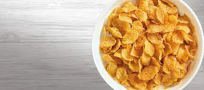

Cornflakes

Another breakfast recipe! As opposed to bagels which I have only discovered recently, this is from my childhood. Good ol' cornflakes.
Ingredients
- Cornflakes
- Milk
- Bonsy, or
- whatever milk you've got.
Method
- Cereal goes in bowl.
- Milk goes in bowl
- Soak to preferred sogginess level
- Put in mouth
bon appetit!
reciple list